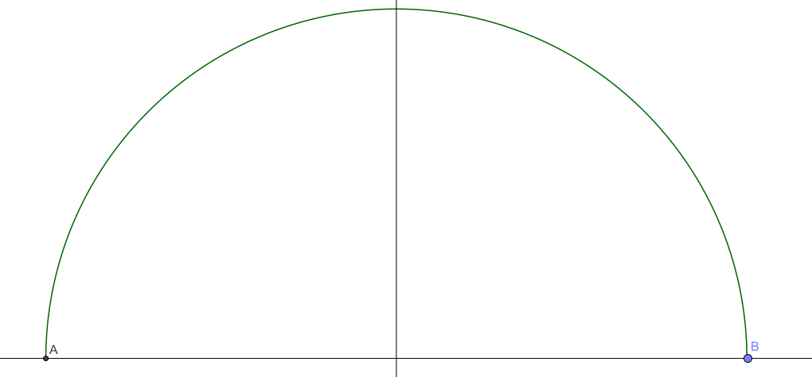

Volume of a Sphere

The sphere volume equation can be found by rotating a semicircle about the x-axis.
The equation of a semicircle is `y=\sqrt{R^2-x^2}`, where `R` is the radius.
The volume is equal to `\int_{-R}^R\pi y^2 \mathrm dx`, finding the cumulative area of the cross-sections.
`V=\pi\int_{-R}^R \sqrt{R^2-x^2}^2\mathrm dx`.
`V=\pi\int_{-R}^R R^2-x^2\mathrm dx`.
`V=2\pi R^3 - \frac{\pi x^3}3\lvert_{-R}^R`.
`V=2\pi R^3 - \frac{2\pi R^3}3`.
`V=\frac43\pi R^3`.